My years at Kimberly-Clark
More than four years, two roles, and the people I worked with.
Day one
This is the office I joined at Kimberly-Clark.
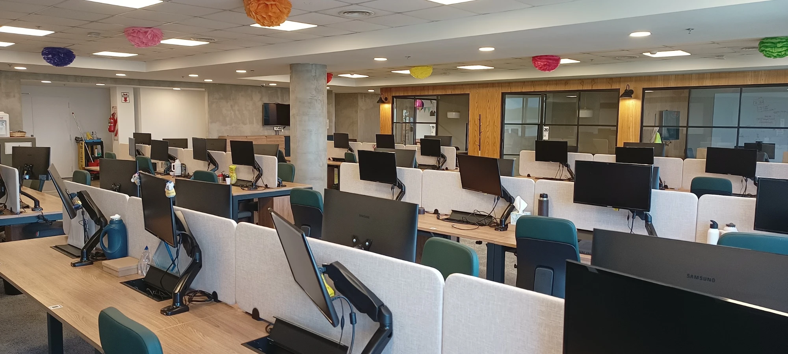
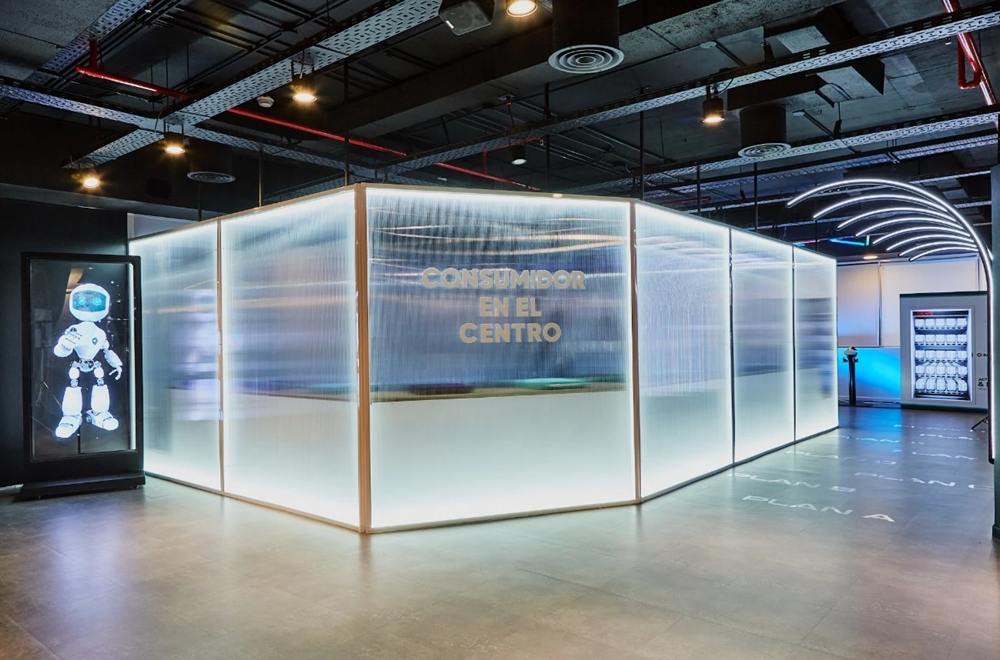
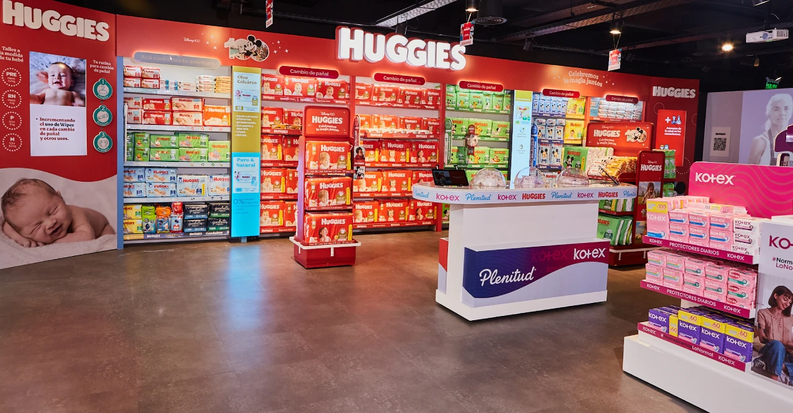
I stayed more than four years. I started in Digital Manufacturing as a Solution Engineer, working with plants across North America and Latin America, and later moved to Marketing Data & Analytics as a Data Engineer.
9 to 5, then 6:30 to 10
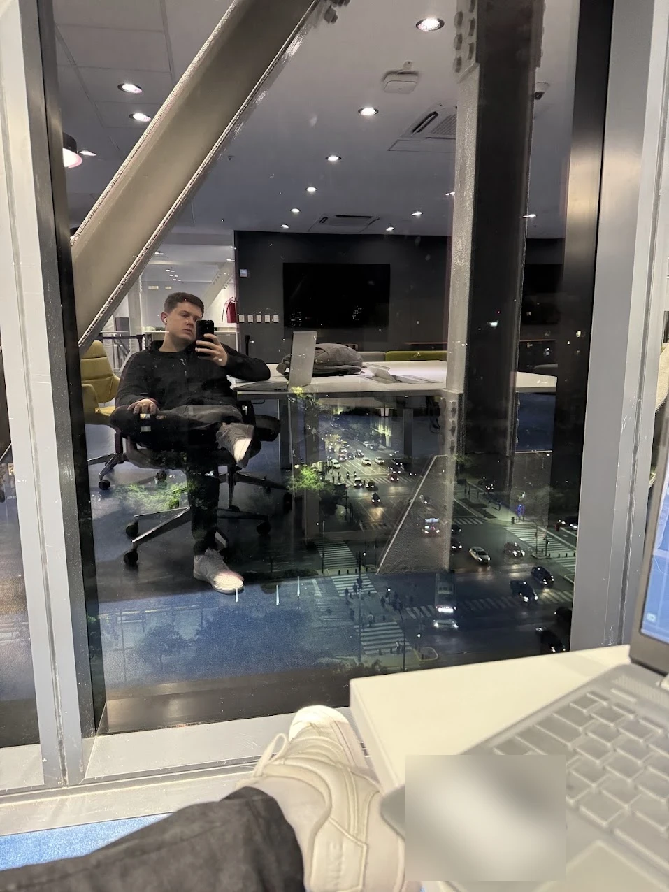
For most of those years I worked from 9 to 5 and studied at UADE from 6:30 to 10 at night. I got home around 11.
Like a lot of people who work and study at the same time. The good part was the view from UADE.
Seeing it run
As a Solution Engineer I worked with data from the production lines, digital twins and reports next to SAP. For a long time I only saw that work on a screen.
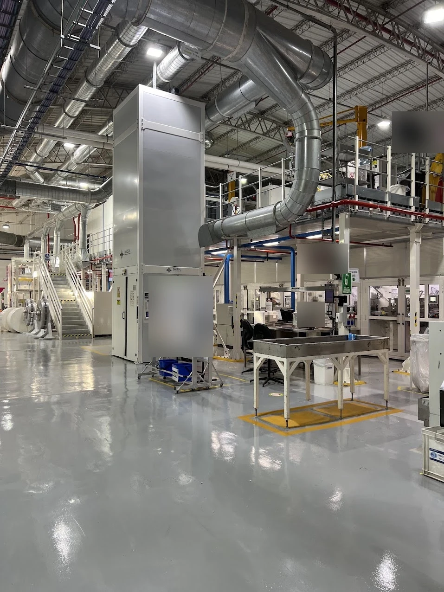
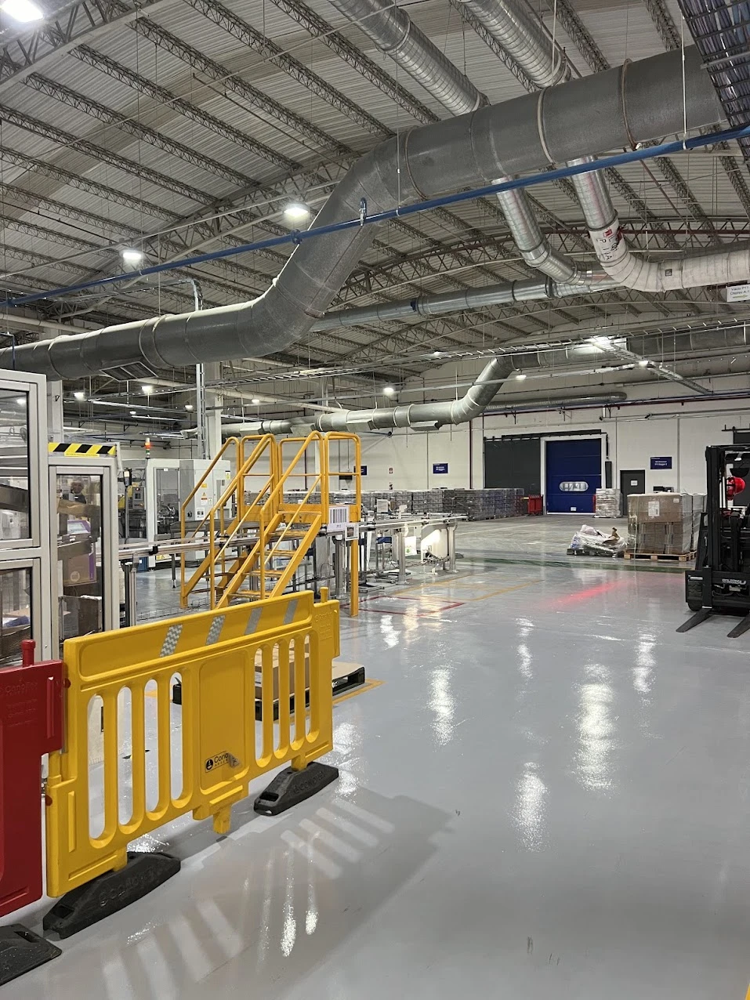

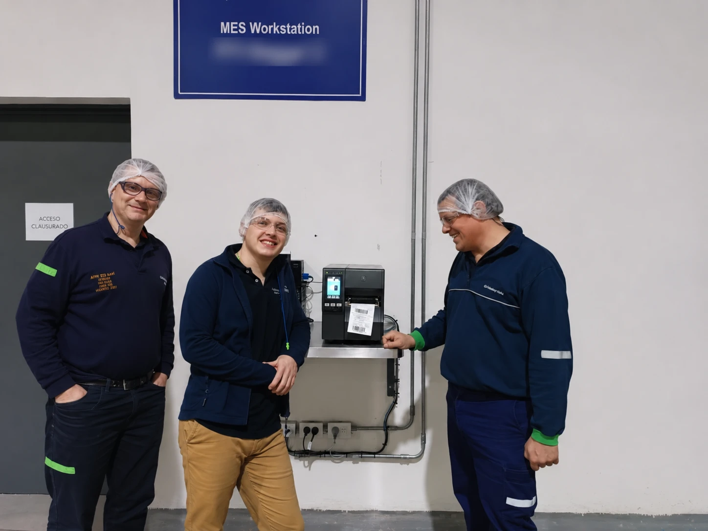
Then I started going to the plants, and for the first time I saw what I had worked on running on the line.
In 2024, at the Pilar plant, we printed the first label from a new MES workstation.
The technical side of that work is in the Smart Manufacturing case study.
The people
What I remember most are the people. Like the day the office showed up in football shirts: Vélez, Independiente and Argentina in the same photo.
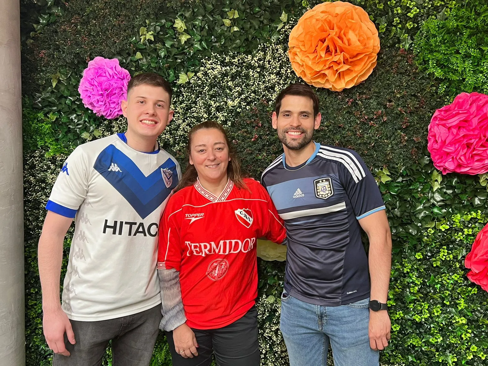
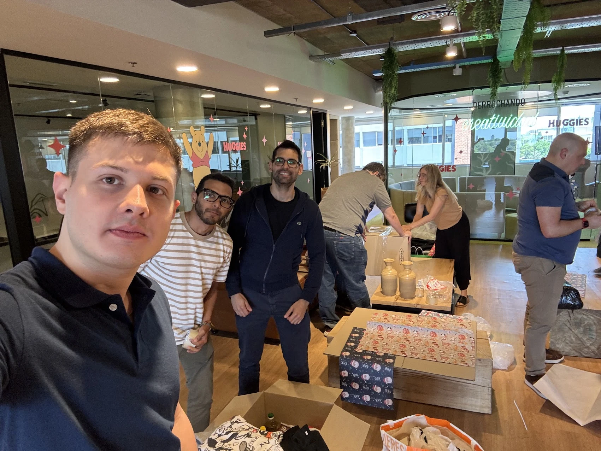
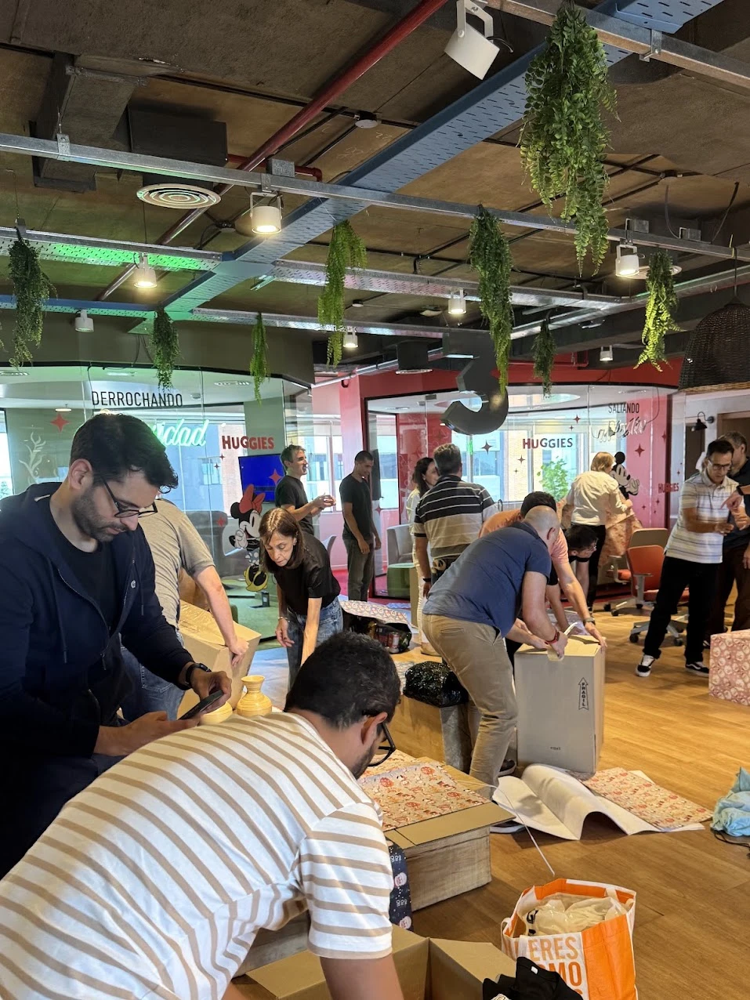
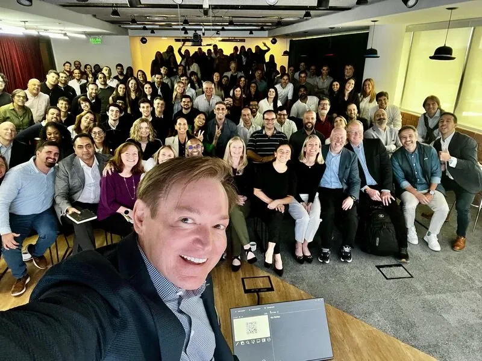
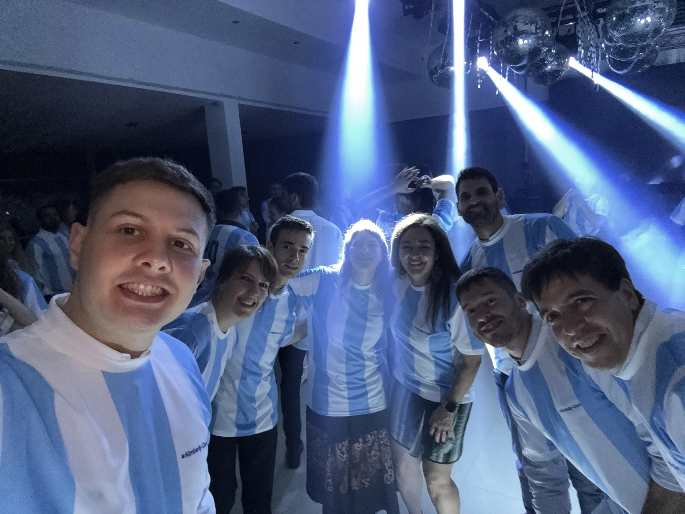
We also packed donation boxes together.
When the company's global leaders visited the Buenos Aires office, we all fit in one selfie (the post on LinkedIn).
And the year-end party, where we all wore the same shirt.
What came next
In my last year I moved to Marketing Data & Analytics and built a customer data platform in-house on Snowflake. That story is in the Composable CDP case study.
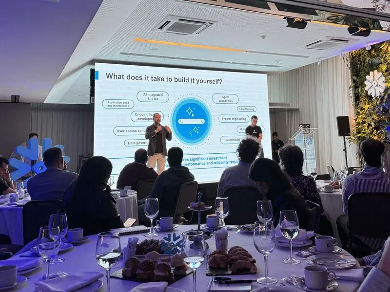
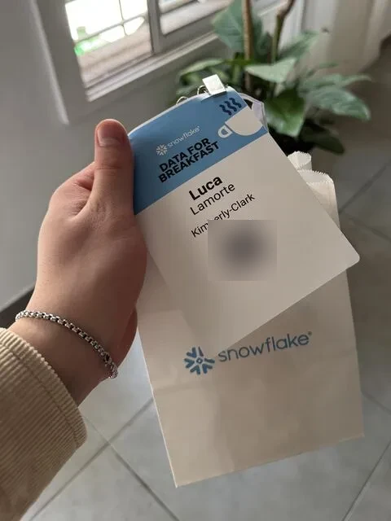
With the new role I also went to events like Snowflake's Data for Breakfast in Buenos Aires.
Leaving
My last day is November 13, 2026. On the 16th I start at IBM as a Senior Data Architect.
Kimberly-Clark is where I started my career, and those four years changed me a lot. In Smart Manufacturing I learned to lead, in an area that was new to me. In Marketing I worked with data full time and realized it's what I want to keep doing.
I grew as a professional, but mostly as a person, and what I value most is the people I did it with.